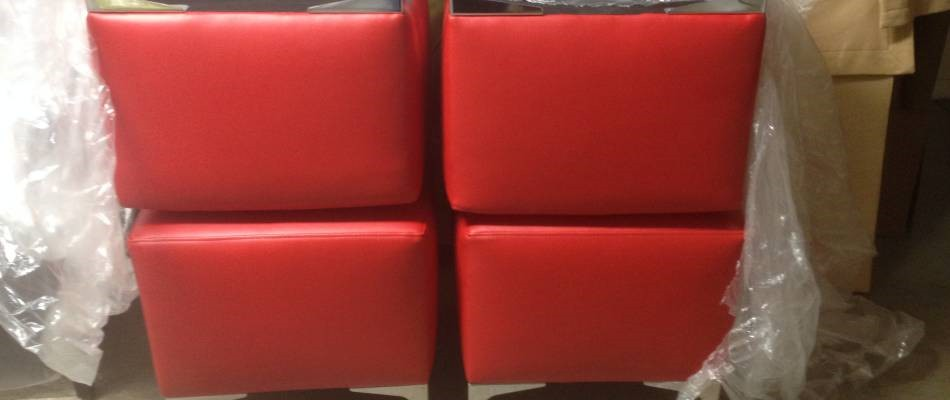
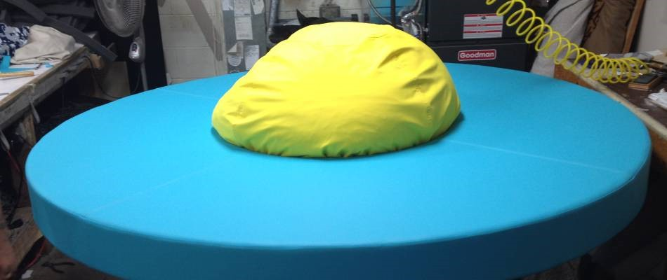
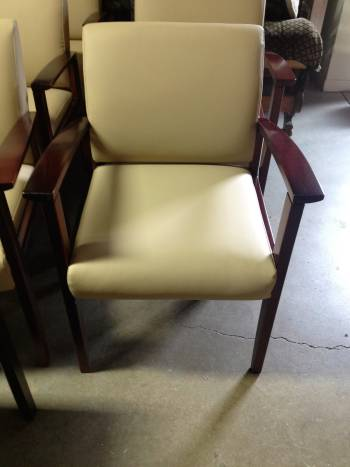
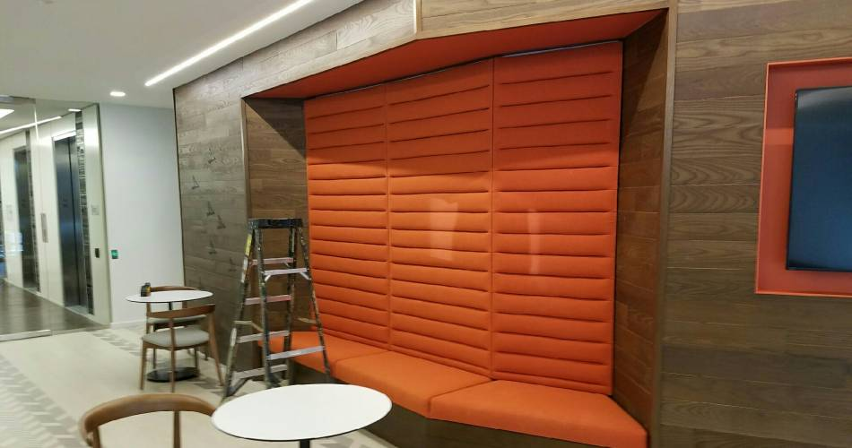
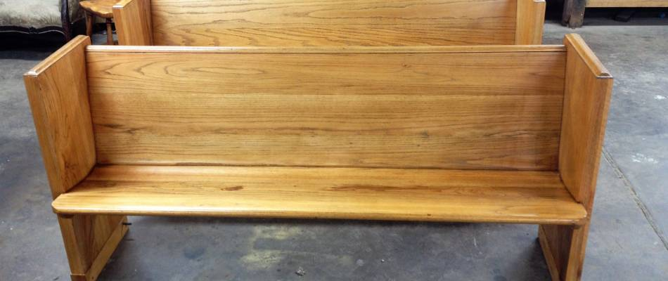

Commercial Upholstery


Restaurants, small businesses and other organizations serving the public know that how you present your place of business says a lot. Beyond showing off beautiful pieces for customers to enjoy, high-quality and tailored furniture speaks to your company's aesthetics, personality and brand. Ablyss knows this better than anyone else, and for that reason offers superior quality commercial upholstery in Denver, Colorado. With our attention to detail and extensive knowledge of high-end upholstery, Ablyss is the premier upholstery shop with decades of experience.
We Know Commercial Upholstery

Commercial upholstery follows many of the same processes and techniques as smaller, home-based upholstery projects. Yet, Ablyss knows that a commercial upholstery project has special needs that must be acknowledged. We understand that our work reflects your business, and work to meet these needs, including:Quality workmanship. Unlike furniture upholstery for homes, we know that commercial upholstery takes more of a beating. Whether it's for seating guests at a restaurant or welcoming visitors to a hotel, commercial upholstery must withstand constant use. For this reason, we use high-quality materials and fabrics to ensure that the upholstered piece you purchase maintains its comfort, style and shape while enduring stains, damage and other wear and tear. Because Ablyss completes projects 100% in-house, we are able to guarantee the quality craftsmanship that goes into each and every piece. We stand behind the work of our upholsterers and our decades of experience.
Unique, one-of-a-kind work. Every business has different upholstery needs, and for this reason, Ablyss is proud to offer specialized commercial upholstery. We are able to provide upholstery and furniture suggestions and options, giving you an idea of how your business could best use these custom, quality pieces in the best possible ways. Ablyss is a multi-talented shop offering not only commercial upholstery, but also custom furniture making, allowing our team to cater to your specific needs.
Styled to your personal or business brand. Your business wants to stand out from competitors, and Ablyss is happy to help. Our selection of upholstery fabrics and materials can allow you to tailor your company's look, creating a standout appearance that resonates with customers. Let us help you determine the best look for your commercial upholstery needs.

Our Commercial Upholstery Services
Unlike other upholstery shops, Ablyss offers a variety of restoration and custom furniture services to truly meet your needs. In general, our upholstery services include:
Sofas
Chairs
Ottomans
Headboards
In addition, we provide custom commercial upholstery to work with existing furniture and can even create entirely new furniture pieces with upholstery work specific to your preferences.

Why Consider Ablyss?Ablyss is extensively skilled at commercial upholstery. Our upholsterers have more than 100 years of combined experience working with designer pieces and vintage furniture, as well as countless material types such as leather, vinyl, hide and fabrics. With a focus on quality work and meticulous stitching, Ablyss creates beautiful products that withstand the test of time. Considering our commercial upholstery services? Contact us on 303.935.0949 for more information on how we can help.